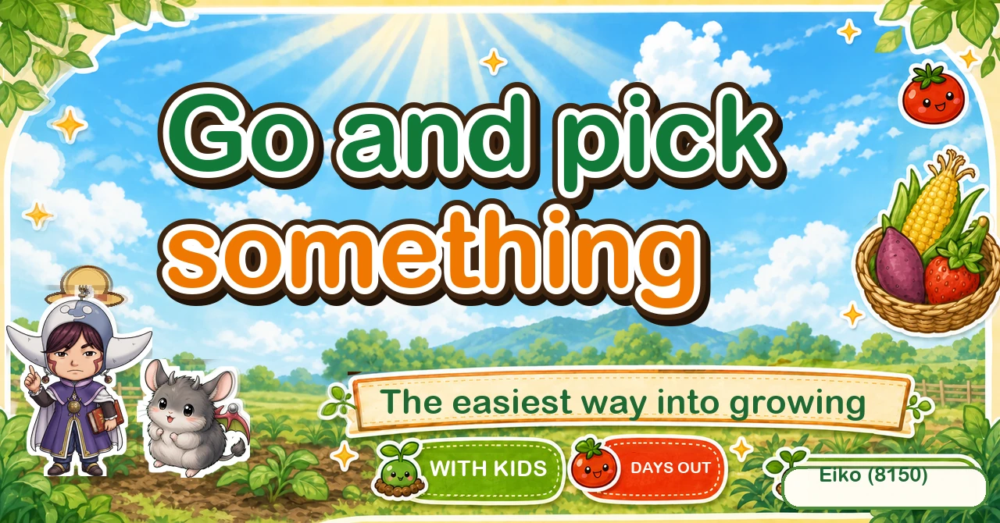
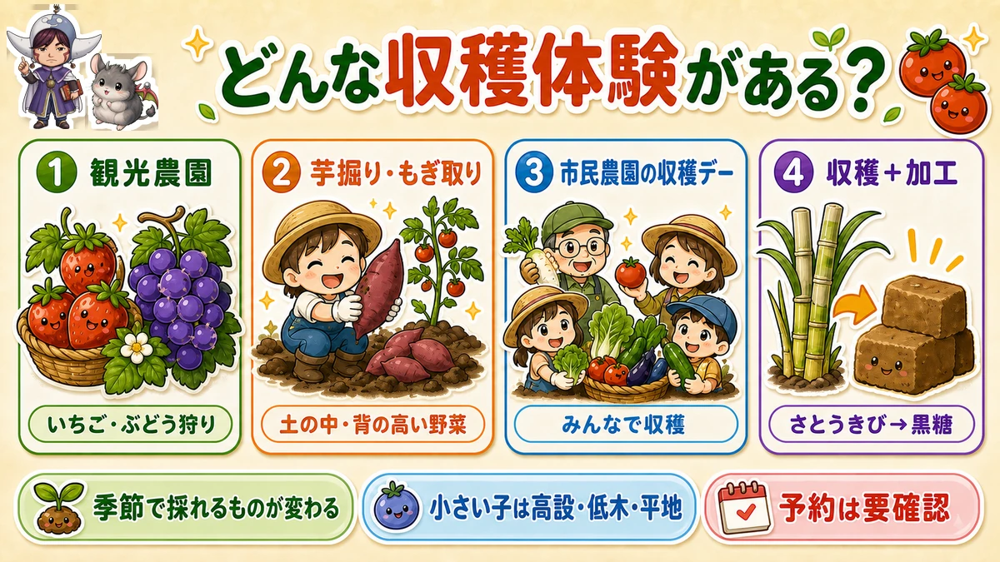
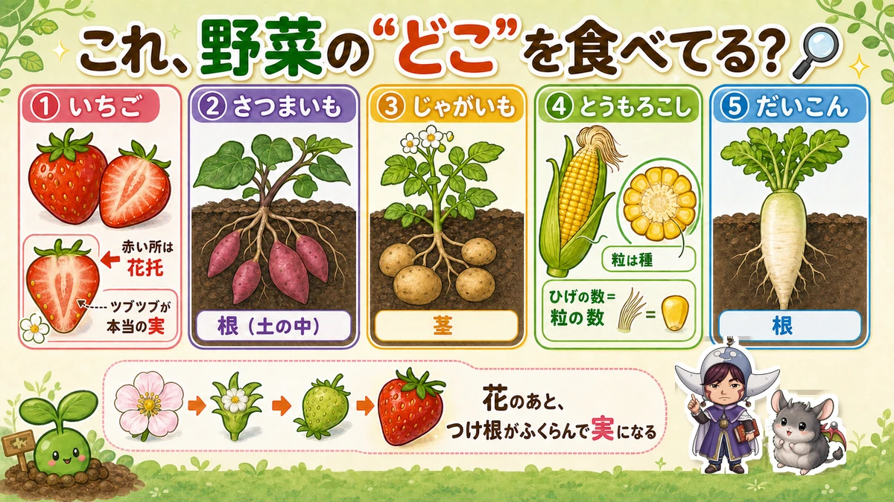

Go and pick something 🧺 The best way into growing is someone else's field

🗨️ "I like the idea of growing things and I don't know where to start."
🗨️ "Where do I take the children in the holidays?"
🗨️ "I'd like them to see how vegetables actually grow."
Hello, I'm Eiko. Eight years of growing vegetables organically and without pesticides, and a teaching licence in science.
This one isn't about growing. It's about going somewhere — and I think pick-your-own is the best entry point for anyone who hasn't started yet.
No soil, no tools, nothing to fail at. You come home with what you picked that day, and a child discovers "so that's how a vegetable is made" ☺️
Why start here
- Nothing can go wrong, and you need nothing — you skip the work and go straight to the best part, the picking
- Children come out of it liking science — strawberries sit on the surface, sweet potatoes are underground, sweetcorn is up a tall stem. Having seen it beats any textbook
- It turns into "can we grow some?" — once you've tasted something picked that hour, the wish to grow it arrives on its own. The best doorway into a kitchen garden there is
Four kinds of visit

What this diagram says （図解の文字）
- What kinds of picking are there?
- ① Fruit farms — strawberry and grape picking
- ② Digging and pulling — things underground and tall crops
- ③ Community-garden harvest days — picking together
- ④ Picking plus making something — sugar cane into raw sugar
- What's ready changes with the season ／ for small children, raised beds, low bushes and flat ground ／ check whether you need to book
- Fruit farms — strawberries, grapes, citrus. Well set up, and safe for beginners and small children
- Digging and pulling — potatoes out of the ground, corn off tall stems. Physical, and children love it
- Community gardens and harvest days — whatever is in season, locally
- Picking plus making — cutting a crop and turning it into something on site
How to choose
- The season decides what's available. Work from when you want to go, not from what you fancy picking
- With small children, look for raised beds, low bushes and flat ground — picking standing up, with no crouching. Check the toilets and baby facilities too
- Check whether booking is required. Popular places are often fully booked only
What to take
You can turn up with nothing. These make it better — and assume that anything involving digging will be muddy:
- Gloves, children's size too — soil and prickly stems
- Wellingtons, clothes that can get ruined, and a change
- Insect repellent, hats, sun protection — an open field in summer is unshaded
- A cool box and ice packs for the journey home
- A rug and drinks for a sit-down
The science: which part are you eating? 🔬

What this diagram says （図解の文字）
- Which part of the vegetable are you eating?
- ① Strawberry — the red part is the receptacle; the "pips" are the real fruits
- ② Sweet potato — a root (underground)
- ③ Potato — a stem
- ④ Sweetcorn — the kernels are seeds; the number of silks equals the number of kernels
- ⑤ Mooli — a root. After the flower, the base swells into what you eat
The best question to ask in the field, because the answer is in your hand.
Strawberry
The red part isn't the fruit. It's the receptacle — the swollen base of the flower. The little "pips" on the outside are the actual fruits, each one with a seed in it.
Sweet potato and potato
Both come out of the ground and they are different organs. A sweet potato is a swollen root. A potato is a swollen underground stem.
You can see it: a potato has "eyes", which are buds — and buds belong to stems.
Sweetcorn
Every kernel is a seed. And the lovely fact to check on the spot: each silk connects to one kernel, so the number of silks equals the number of kernels. A cob is a bundle of flowers that were pollinated one at a time.
Mooli and other roots
A root — and the white flesh is a store of what the leaves made, which the plant was saving for next year's flowers. We intercept it.
To sum up
- ✅ Pick-your-own is the best way into growing: nothing to prepare, nothing to fail
- ✅ Four kinds: fruit farms / digging and pulling / community harvest days / picking plus making
- ✅ Choose by season, and by whether small children can reach
- ✅ Check booking requirements
- ✅ Take gloves, wellingtons, a change of clothes, sun protection and a cool box
- ✅ A strawberry's red part is the receptacle; the pips are the fruits
- ✅ Sweet potato = root, potato = stem (hence the eyes)
- ✅ One silk per kernel of sweetcorn
- ✅ Ask: root, stem, leaf, flower or seed?
You don't have to do all of it. Search for one place near you and book a morning. The wish to grow something usually arrives on the way home 🧺
Thank you for reading!